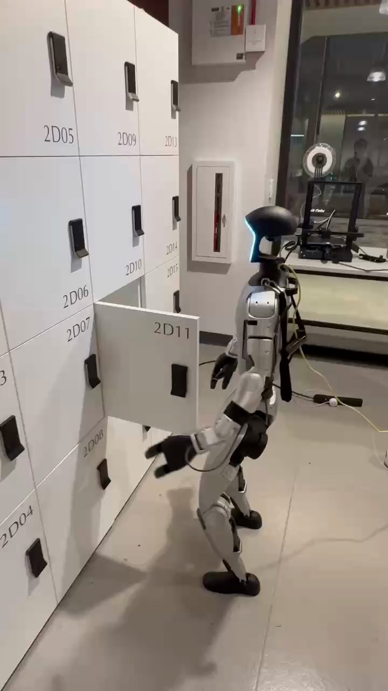

Humanoid Everyday · articulated-7__close_cabinet_door
Close cabinet door

Visual review action_review.json
{
"prompt_protocol": "humanoid_action_v1",
"prompt_provenance": "visually_authored_from_video_and_initial_frame",
"reviewed_contact_sheets": [
"sheet_001.jpg",
"sheet_002.jpg"
],
"inspected_frame_stride": 2,
"inspected_sampled_frame_count": 72,
"initial_scene": "Robot stands facing the cabinet bank with both feet planted and knees bent. The door marked 2D11 is already open, projecting toward the robot; the camera-near left hand is below the panel and the far right hand is idle near the waist.",
"observed_sequence": [
{
"start_frame": 0,
"end_frame": 20,
"action": "Left shoulder and elbow raise the camera-near hand from below the door toward its broad outer face. The door remains open and the right hand stays low beside the torso.",
"confidence": "high"
},
{
"start_frame": 21,
"end_frame": 46,
"action": "Left hand reaches and bears against the outer door panel, below the 2D11 marking and away from the handle. Fingers remain open; there is no observed handle grasp. The hand adjusts while the panel remains largely open.",
"confidence": "high"
},
{
"start_frame": 47,
"end_frame": 66,
"action": "Left arm presses the panel inward; the door rotates around its left vertical hinge into alignment with the surrounding cabinet fronts. The hand follows the closing panel, and the dark opening disappears.",
"confidence": "high"
},
{
"start_frame": 67,
"end_frame": 86,
"action": "Door is visibly closed and flush. Left hand remains close to the cabinet briefly; the right hand remains low without manipulating or supporting the door.",
"confidence": "high"
},
{
"start_frame": 87,
"end_frame": 126,
"action": "Left hand withdraws from the closed door and the elbow extends downward, lowering the arm toward the side. Feet remain in place.",
"confidence": "high"
},
{
"start_frame": 127,
"end_frame": 143,
"action": "Robot holds the final standing posture with both hands lowered. Door 2D11 remains closed.",
"confidence": "high"
}
],
"arm_hand_roles": {
"left": "Active camera-near arm: raises the open hand, presses the broad outer door face to swing it shut, then withdraws and lowers. No handle grasp, object lifting or transfer is observed.",
"right": "Far arm remains lowered near the waist/side; does not contact, stabilize or manipulate the door.",
"coordination": "Single-hand door closure. Robot maintains its planted, slightly bent-knee stance; no hand-to-hand transfer or person interaction."
},
"anatomical_side_evidence": {
"active_hand": "left",
"confidence": "high",
"evidence": "The illuminated front facial contour points toward image left, toward the cabinet, while the backpack/cables lie behind the torso on image right. The camera sees the robot from its left side and slightly behind: the active arm is continuously visible from the near shoulder through elbow to hand, with the other arm farther behind it. The near-side arm is thus robot-relative left; this is based on body facing and attachment, not image position alone.",
"initial_frame_indices": [
0
],
"corroborating_frame_indices": [
16,
24,
30,
48,
56,
80,
143
]
},
"evidence_frame_indices": [
0,
16,
24,
30,
48,
56,
62,
64,
80,
90,
116,
143
],
"initial_png_inspected_at_native_resolution": true,
"full_sequence_inspection": {
"source_frame_interval": [
0,
143
],
"stride_two_frames": "0, 2, ... 142",
"all_contact_sheets_visually_viewed": true,
"native_source_png_dimensions": [
720,
1280
],
"native_transition_and_terminal_frames_visually_viewed": [
0,
16,
24,
30,
48,
56,
62,
64,
80,
90,
116,
143
]
},
"terminal_state": "The 2D11 cabinet door is flush with the cabinet and remains closed at frame 143; both hands are lowered and the robot stands in the same location.",
"selected_execution_status": "success",
"uncertainties": [
"Internal latch engagement is not visible; success refers to the visibly closed door, not a verified latched or locked state. Exact contact force and the source caption's gentle-force/avoid-slamming characterization cannot be established from visual frames."
],
"annotation_discrepancies": [],
"source_annotation_assessment": "The source annotation describes closing a cabinet door, which agrees with the visible left-hand panel push and closed terminal state. No discrepancy in task or outcome; qualitative force claims are not carried into the usable prompt.",
"video_id": "articulated-7",
"dataset": "Humanoid_Everyday",
"dedicated_review_agent": "review_he_articulated_7",
"review_source_video": "Humanoid_Everyday/articulated-7__close_cabinet_door/third_person/original/original.mp4",
"source_frame_count": 144,
"source_fps": 29.782833505687694,
"native_detail_frames": [
0,
16,
24,
30,
48,
56,
62,
64,
80,
90,
116,
143
],
"world_model_prompt": "The robot raises its left hand to the outer face of the open cabinet door marked 2D11 and presses it inward, swinging the door shut against the cabinet. It then withdraws and lowers the left hand while remaining in place, leaving the door closed. Keep the camera fixed; preserve robot geometry, physically valid joint motion, and normal gripper opening and closing.",
"original_task_instruction": "Closing a cabinet door smoothly, demonstrating control of hinged mechanisms and gentle force application to avoid slamming.",
"selected_segment": {
"start_frame": 0,
"end_frame_exclusive": 144,
"reason": "Complete original single-task reference; no cropping or trimming requested."
},
"source_video_sha256": "98ca324a461d544ba906270dcc5f1d397f13a80bc779b53a175c03856aac19a7",
"review_completed_at": "2026-10-13T17:12:20.140999+00:00"
}